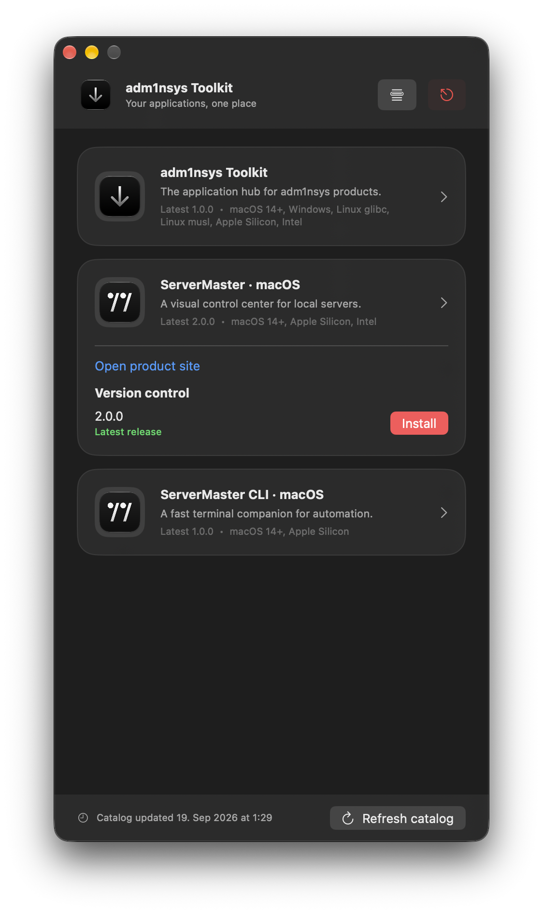
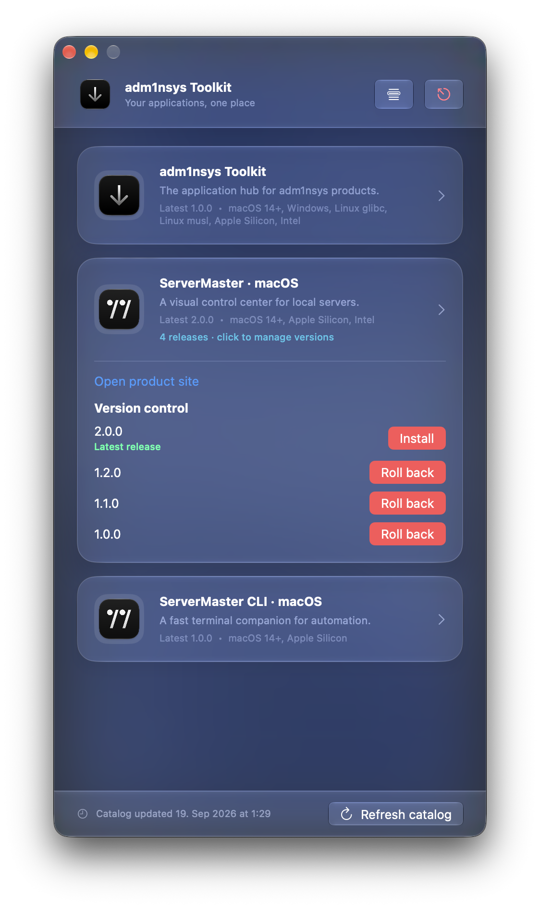

macOS · SwiftUI · Installer
adm1nsys Toolkit


/Applications/<Name>.app | |
~/.local/bin/<tool> |
xcodebuild -project mac/Adm1nSysToolkit.xcodeproj -scheme Adm1nSysToolkit \
-configuration Release ARCHS="arm64 x86_64" ONLY_ACTIVE_ARCH=NO CODE_SIGNING_ALLOWED=NO build